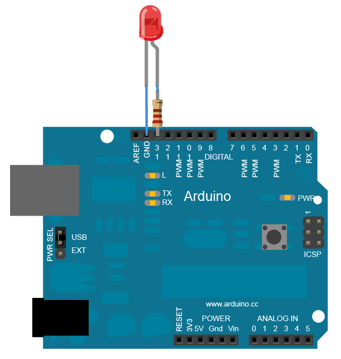
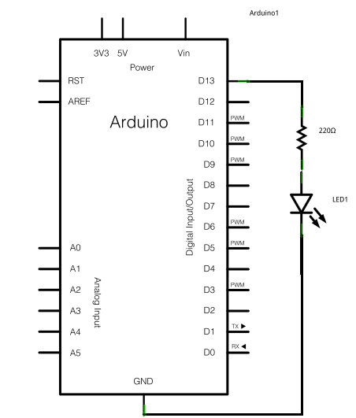

在前面我们用delay( )实现了LED的闪烁，可是当LED闪烁时，其他程序也需要运行时，该怎么办呢？
这里我们将学习一个很重要的命令——时间追踪器millis( )，它从程序开始运行时，进行计时，
因此我们可以令LED在特定的时间点亮起或是熄灭，这样就实现了闪烁效果，同时其他程序可以照常运行。
材料清单：
线路图：

原理图：

代码:
按以下路径打开代码：File-Examples-Digital-BlinkWithoutDelay。
/* Blink without Delay
Turns on and off a light emitting diode(LED) connected to a digital
pin, without using the delay() function. This means that other code
can run at the same time without being interrupted by the LED code.
The circuit:
* LED attached from pin 13 to ground.
* Note: on most Arduinos, there is already an LED on the board
that's attached to pin 13, so no hardware is needed for this example.
created 2005
by David A. Mellis
modified 8 Feb 2010
by Paul Stoffregen
This example code is in the public domain.
http://www.arduino.cc/en/Tutorial/BlinkWithoutDelay
*/
// constants won't change. Used here to
// set pin numbers:
const int ledPin = 13; // the number of the LED pin
// Variables will change:
int ledState = LOW; // ledState used to set the LED
long previousMillis = 0; // will store last time LED was updated
// the follow variables is a long because the time, measured in miliseconds,
// will quickly become a bigger number than can be stored in an int.
long interval = 1000; // interval at which to blink (milliseconds)
void setup() {
// set the digital pin as output:
pinMode(ledPin, OUTPUT);
}
void loop()
{
// here is where you'd put code that needs to be running all the time.
// check to see if it's time to blink the LED; that is, if the
// difference between the current time and last time you blinked
// the LED is bigger than the interval at which you want to
// blink the LED.
unsigned long currentMillis = millis();
if(currentMillis - previousMillis > interval) {
// save the last time you blinked the LED
previousMillis = currentMillis;
// if the LED is off turn it on and vice-versa:
if (ledState == LOW)
ledState = HIGH;
else
ledState = LOW;
// set the LED with the ledState of the variable:
digitalWrite(ledPin, ledState);
}
}
参考连接